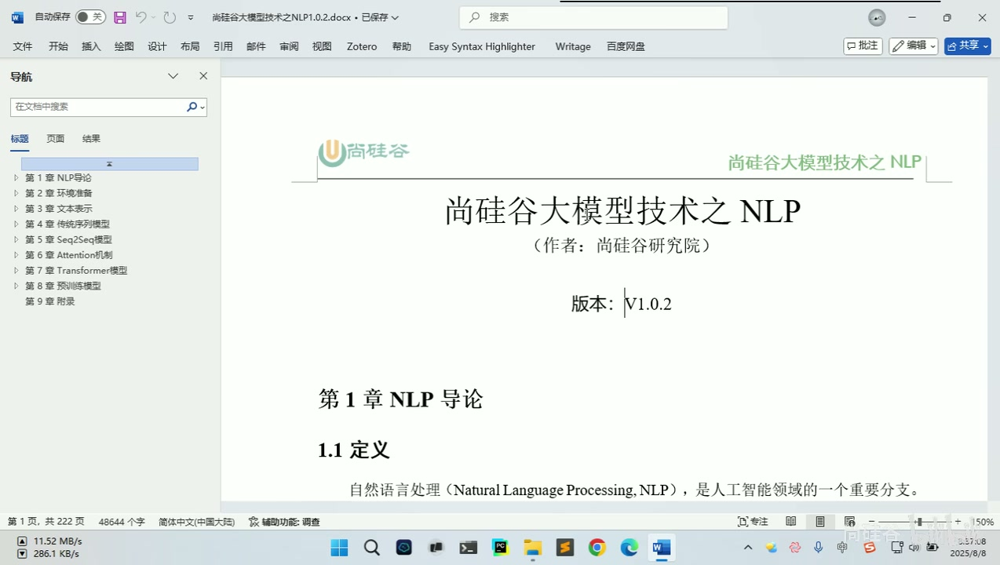
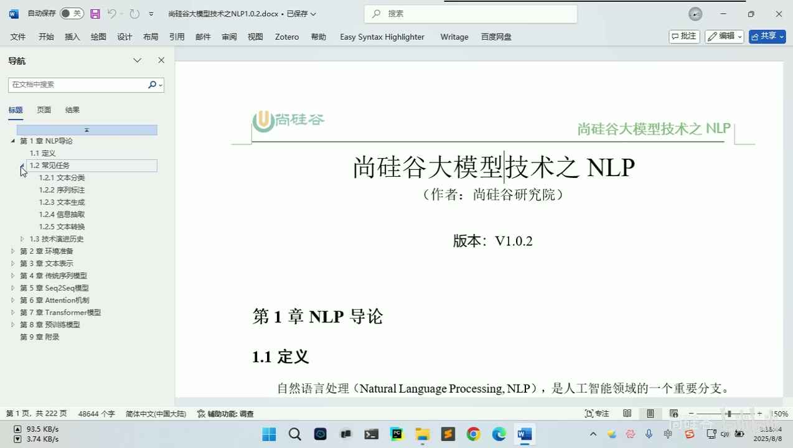
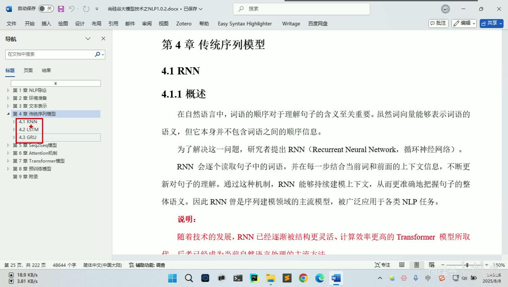
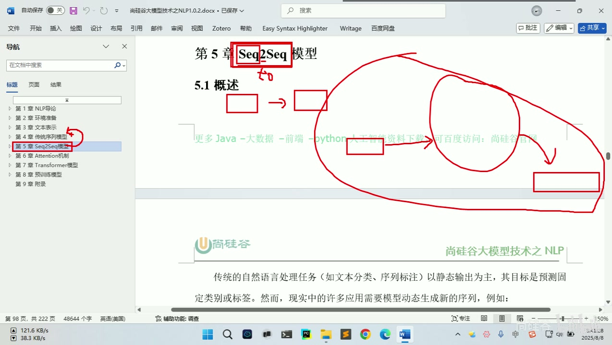
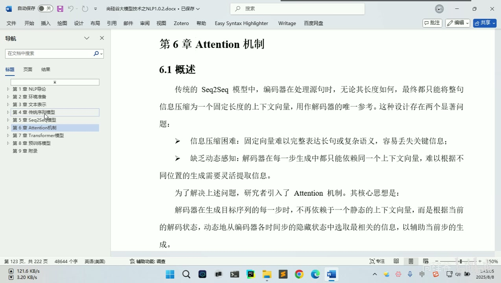
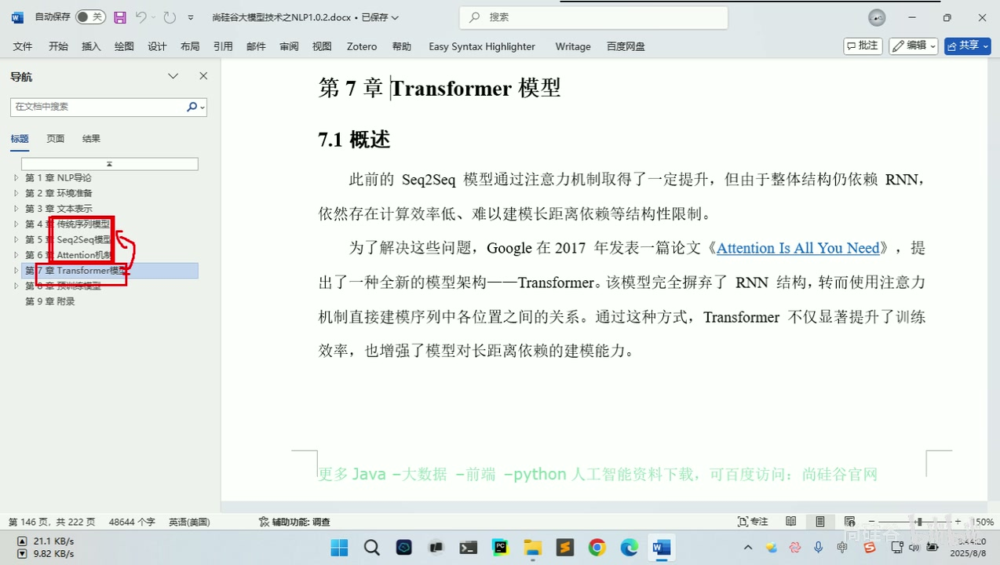
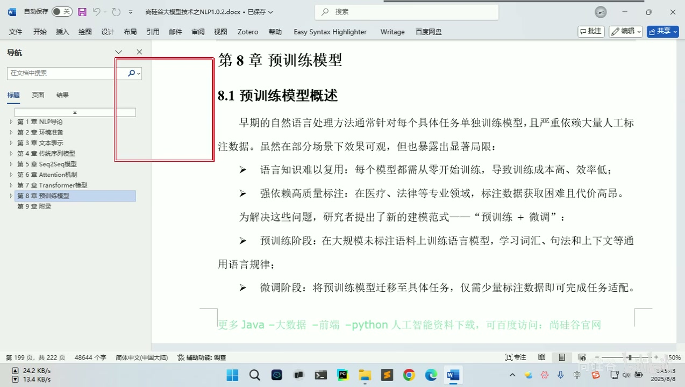

「大模型」更多指的是大语言模型——Large Language Model;它正是从传统自然语言处理技术发展而来。
LLM 是核心
课程核心是后续大模型内容,而大模型多数语境下即大语言模型(LLM)。
多模态是延伸
如今的大模型也能处理图片、音频、视频——即所谓多模态;但最初处理的是自然语言。
NLP 是根
大模型由传统 NLP 技术演进而来,学好 NLP 对理解大模型内容必不可少。
从深度学习收束,经文本表示、RNN/LSTM/GRU、Seq2Seq、Attention 一路铺垫到 Transformer 与预训练模型——一张图看清 NLP 阶段的学习路线。





Transformer 用全新架构实现 Seq2Seq 的功能——功能相同,效率更高、效果更好;后续大模型阶段的一切知识点都建立在它之上。
基于 RNN/LSTM/GRU 的序列到序列架构
动态感知上下文,增强翻译等任务效果
架构彻底更新:计算效率更高,效果更好,大模型的共同基座


Transformer 之后兴起「预训练 + 微调」范式,涌现 GPT、BERT 等预训练模型;如今的 DeepSeek、千问、GPT 都属此范畴——NLP 阶段就此为大模型课程承上启下。
预训练 + 微调成为热点,GPT、BERT 等在这一阶段大量涌现。
DeepSeek、千问、GPT 等常见大模型,本质都属预训练模型范畴。
整个 NLP 阶段的重中之重是 Transformer——前置内容也该认真学。